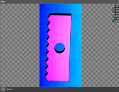
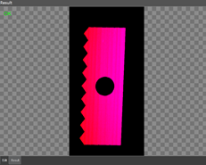
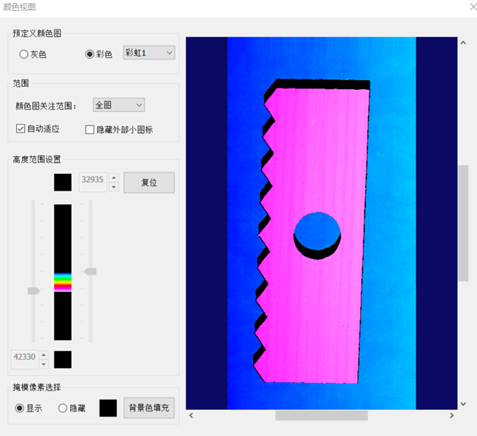

Công cụ chuyển đổi hình ảnh chiều sâu sang hình ảnh RGB có chức năng chuyển đổi hình ảnh chiều sâu 16 bit sang hình ảnh RGB, chức năng tương tự biểu đồ màu, trong đó giá trị tối đa, giá trị tối thiểu của phạm vi chiều cao thiết lập sử dụng giá trị Z thực tế vật lý, công cụ theo giá trị đầu vào ánh xạ tuyến tính đến phạm vi phù hợp, dùng để loại bỏ điểm nhiễu, thu được hình ảnh RGB lý tưởng hơn, như hình 1, 2 cho thấy.



| Phân loại | Tên tham số | Mô tả tham số |
|---|---|---|
| Cửa sổ thuộc tính | Phạm vi quan tâm biểu đồ màu | Chia thành 3 loại: toàn bộ hình ảnh, hình chữ nhật affine, hình tròn. |
| Chế độ tự động | Có để thuật toán tự động xác định giá trị chiều sâu tối thiểu, giá trị chiều sâu tối đa hay không. | |
| Giá trị chiều sâu tối thiểu | Giá trị Z thực tế, phạm vi lấy giá trị chịu ảnh hưởng bởi độ phân giải trục Z của hình ảnh và độ lệch hướng Z, nhỏ hơn giá trị này sẽ bị lọc bỏ như điểm nhiễu. | |
| Giá trị chiều sâu tối đa | Giá trị Z thực tế, phạm vi lấy giá trị chịu ảnh hưởng bởi độ phân giải trục Z của hình ảnh và độ lệch hướng Z, lớn hơn giá trị này sẽ bị lọc bỏ như điểm nhiễu. | |
| Chế độ màu hình ảnh chiều sâu | Chia thành 2 loại, chuyển thành hình ảnh xám hoặc hình ảnh màu. | |
| Loại thanh cầu vồng | Chia thành 2 loại, cầu vồng 1 hoặc cầu vồng 2. | |
| Cửa sổ hình ảnh | Hình ảnh chiều sâu | Hiển thị hình ảnh chiều sâu cần phát hiện, hiển thị dưới dạng hình ảnh giả màu. |
| Vùng phát hiện | Hiển thị vùng cần phát hiện trên hình ảnh. | |
| Chuỗi dữ liệu | Hình ảnh chiều sâu đầu vào | Nhập hình ảnh chiều sâu cần phát hiện. |
| Biến đổi tuyến tính 2D | Biến đổi tịnh tiến, xoay, thu phóng của mục tiêu so với mẫu. | |
| Giao diện nâng cao | Không |
| Phân loại | Tên tham số | Mô tả tham số |
|---|---|---|
| Cửa sổ giám sát | Hình ảnh RGB đầu ra | Chiều dài, chiều rộng và kích thước pixel của hình ảnh đầu ra. |
| Kết quả thực thi | Kết quả thực thi công cụ. | |
| Thời gian thực thi | Thời gian thực thi công cụ. | |
| Cửa sổ hình ảnh | Hình ảnh chiều sâu đầu vào | Hiển thị hình ảnh chiều sâu được phát hiện, hiển thị dưới dạng hình ảnh giả màu. |
| Hình ảnh RGB đầu ra | Hiển thị hình ảnh RGB sau chuyển đổi. | |
| Chuỗi dữ liệu | Giống tham số cửa sổ giám sát, cung cấp cho công cụ sau sử dụng. |
Nguyên lý của công cụ chuyển đổi hình ảnh chiều sâu sang hình ảnh RGB là chuyển đổi giá trị chiều sâu (giá trị Z thực tế) theo hàm ánh xạ tuyến tính đến phạm vi [0, 65535], đồng thời có thể thiết lập giá trị chiều sâu tối đa, giá trị chiều sâu tối thiểu để loại trừ một số điểm nhiễu có giá trị Z thấp hơn hoặc cao hơn, thu được hình ảnh RGB lý tưởng hơn.
参见“\Samples\3D\深度图\深度图像转RGB图像工具.gvp”。